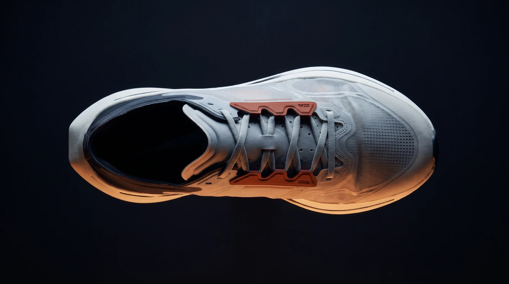
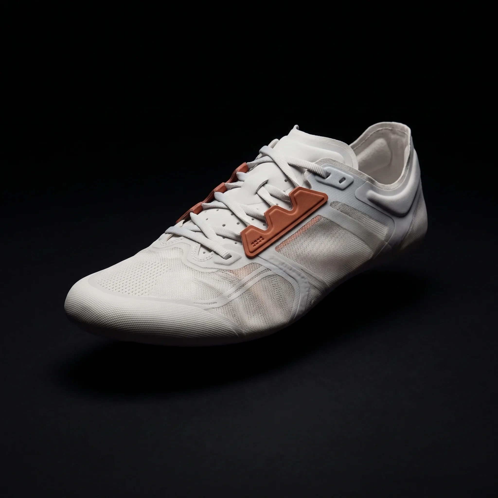
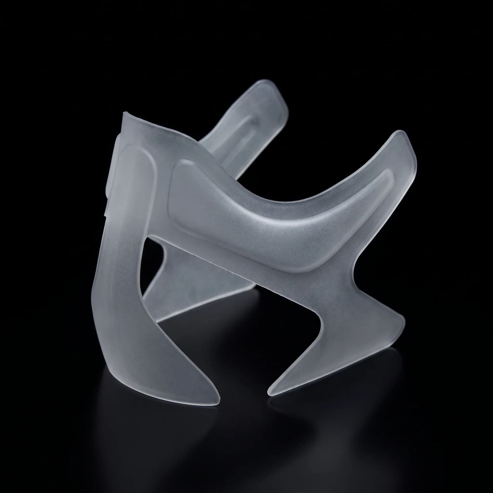
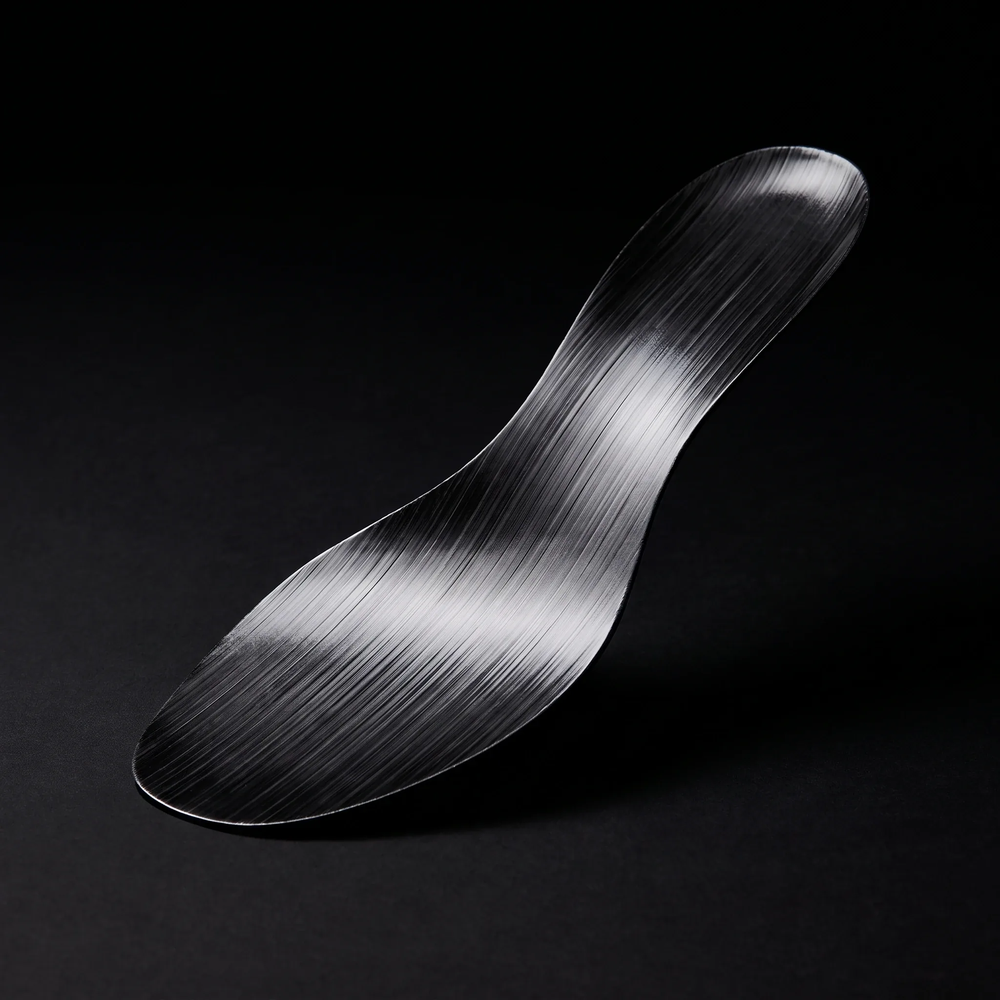
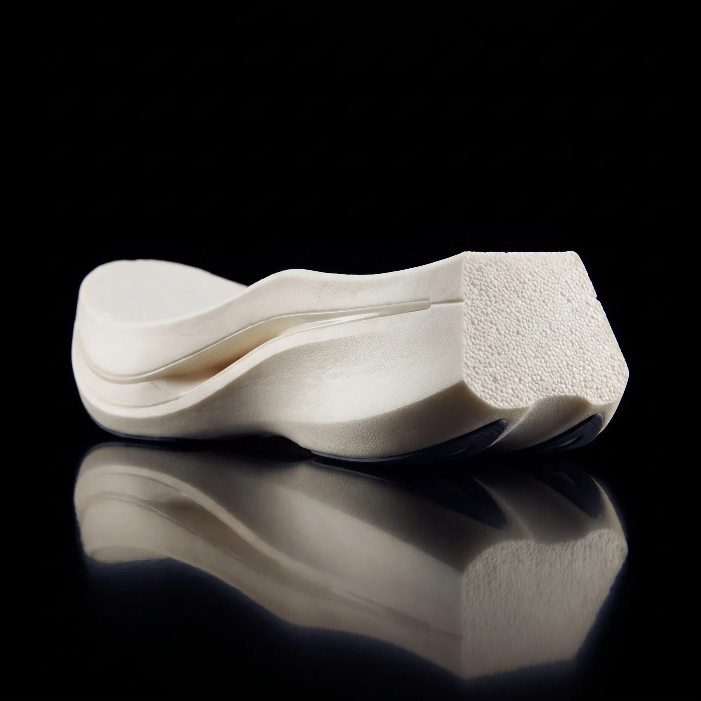

Umbra Strata 01 — carbon-plate road racing shoe
01 — Origin
Road racing · carbon plate
Four strata, one sheet of carbon, 168 grams. Built for one race day.
Drop 8 mm · 168 g · 12 March

02 — Upper
42 den · 31 g/m²
Thirty-one grams
per square metre
A single-layer engineered mesh, welded rather than stitched. It holds the foot where the plate loads it and disappears everywhere else.
No sew lines · no overlays
Welded lace cage
03 — Construction
1.0 mm cage · 0.9 mm plate
/01
Skin

/02
Cradle

/03
Plate

/04
Core

Skin · cradle · plate · core
No shank · rubber only where it lands
04 — Scale
EU 43 · half pair
Thirty-nine millimetres. One under the limit.
39mm
Heel
31mm
Forefoot
8mm
Drop
Stack 39 / 31 mm · drop 8
Measured at the heel, EU 43
05 — Plate
Bending stiffness 38 N/mm · 3-point, 50 mm
A sheet that
bends one way
Unidirectional tape laid at 0° and ±45°, cured to the angle of toe-off. It bends once per stride and straightens under the toe.
0.9 mm · full length
No shank · no glue line
06 — Release
12 March · 09:00 CET
Strata 01
€ 289
One email, 24 hours before 12 March. Nothing else.
Race Division
Sizes 38–47